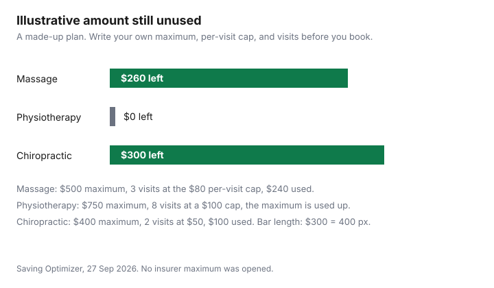

Healthcare · Canada
RMT Massage, Physio and Chiro Without Wasting Benefits: Paramedical Maximums and Receipt Rules in Canada
To use your paramedical benefits for massage, physio and chiropractic in Canada without waste, check the annual maximum, whether it is per practitioner or combined, any per-visit cap, and the benefit-year reset date. Get receipts that meet your practitioner’s college standards. A paramedical maximum is a ceiling in a booklet, and an unused ceiling is not cash until you know the reset date and the receipt the insurer will accept. This page stays on massage, physiotherapy, and chiropractic claims. Drug formularies are the workplace drug guide. Choosing the spending account at enrolment is the employer benefits guide. Ontario’s publicly funded physiotherapy clinics are the funded physiotherapy guide. None of those is a substitute for the line in your plan that says how much is left. No plan maximum and no visit price is listed here, so the worksheet uses a labelled illustrative plan. This is not tax advice and not a recommendation to book a treatment.
Key takeaways
- Read three numbers before you book: the annual maximum, whether it is per practitioner or combined, and any per-visit cap. This page does not quote a model booklet, so it prints none of those as a real plan.
- The benefit year may not be the calendar year. Unused amounts carry forward only if the booklet says so. Do not assume they do.
- The College of Massage Therapists of Ontario’s standards require a massage receipt to show the date, the length, the patient’s name, the RMT’s name, the amount, the RMT’s signature and registration number, and the HST number if it applies.
- On the CRA authorized-practitioners table checked 27 Sep 2026, registered massage therapy is marked Yes in British Columbia, New Brunswick, Newfoundland and Labrador, Ontario, and Prince Edward Island. It is not marked Yes for every province.
- Physiotherapists and chiropractors are marked Yes on that table for every province and for Yukon, and not applicable for the Northwest Territories and Nunavut. Confirm the cell for your province before you claim.
How paramedical maximums work: per practitioner, combined, per visit
Three designs show up in booklets, and they do not spend the same way. A per-practitioner maximum is a separate pot for massage, another for physiotherapy, and another for chiropractic.
A combined maximum is one pot for several of those professions. A per-visit cap is a ceiling on a single appointment, even when the annual pot is larger. A $0 remaining balance can mean you hit the annual pot, or it can mean the visit was over the per-visit cap and the insurer paid only part of it. Write both numbers down before you book a cluster of visits in one month.
Reasonable and customary amounts are a fourth ceiling some plans use: they pay up to their own idea of a usual fee, and you pay the difference. This guide does not cite a reasonable-and-customary table, so no usual fee is printed. Ask the insurer for the amount they will pay for the length of appointment you are booking, and ask the clinic for the fee before you lie down. The College of Massage Therapists of Ontario’s standards say fees are posted in a visible place and that a receipt is itemized if the patient or the payer asks. A posted fee you did not read is still your bill.
Benefit year vs calendar year: planning visits before your reset
A calendar year ends on 31 December. A benefit year ends on the date in the booklet, which may be the plan’s renewal date, a work anniversary, or something else.
Visits after the reset spend the new maximum. Visits before the reset spend whatever is left. If you do not know the date, call the insurer and write it on the worksheet. Booking in December because “benefits expire” is right only when the booklet uses the calendar year.
Unused maximums are the other half of that date. Some plans forfeit the unused amount at reset. Some plans have a short carry-forward. This page does not cite a booklet that states either rule, so it does not tell you that unused massage dollars always disappear. Read the sentence. If the sentence is missing, ask in writing. A health spending account, if you have one, often has its own deadline. That deadline is in the HSA guide, not in this paragraph. Do not spend a paramedical pot and an HSA on the same receipt without asking which one should be billed first.
Receipt rules: registration numbers, practitioner names, and when you need a referral
The College of Massage Therapists of Ontario’s Standards of Practice, the fees-and-billing section of the document checked 27 Sep 2026, says a massage therapy receipt, paper or electronic, includes at a minimum the date of the appointment, the length of the appointment, the patient’s name, the RMT’s name, the dollar amount, the RMT’s signature and registration number, and the HST number if it applies.
The receipt may say “Massage Therapy treatment,” and show that registration number, only for services inside the scope of massage therapy that the RMT performed themselves. A product or service outside that scope must be described as what it was, and must not be called massage therapy. A gift certificate is receipted as a gift certificate. When it is redeemed, the college’s standard says the receipt is not a second claim for the same dollars.
The person on the receipt has to be the person who treated you. The college’s misconduct guidance says an RMT does not issue a receipt under their name and number for a treatment they did not perform. A plan that wants a referral, a physician’s note, or a diagnosis code is asking for something the college standard does not universally require. That request lives in the booklet. This page does not cite a plan that requires a referral for massage, physio, or chiropractic, so it does not say you always need one. Ask before the visit. A denied claim is often a missing registration number or a receipt that says “relaxation” when the plan pays only “massage therapy.” Match the words the plan uses, as long as they are true. The coordination guide is what to do when two insurers each want the receipt.
Coordinating two plans for paramedical claims
Two workplace plans can both have paramedical maximums. The usual pattern, which the coordination guide treats in full, is to submit to the plan that covers you as a member first, then send the unpaid balance and the explanation of benefits to the second plan.
The second plan pays according to its own maximum, its own per-visit cap, and its own referral rule. It does not automatically pay whatever the first plan refused. If both plans cover a dependent, the booklet’s birthday rule or another order decides which plan is first. Do not invent that order here. Read it.
Coordination does not create a new maximum. If each plan allows $0 because you already used the pot, the second submission pays nothing. If the first plan paid the per-visit cap and the second plan has room, the second plan may pay part of the remainder, up to its own cap. Keep both explanations of benefits. The amount you still paid is the amount you might look at for the medical expense tax credit, not the amount the clinics billed before insurance. Publicly funded physiotherapy in Ontario, for people the province covers, should be used before a private visit spends the workplace pot. The funded-clinic rules are on the physiotherapy guide. They are not repeated as a new eligibility list here.
What happens to unused maximums, and what's claimable on the medical expense tax credit
Unused maximums are a plan question, answered above: only the booklet says whether they survive the reset. The tax question is separate.
CRA’s authorized medical practitioners table, checked 27 Sep 2026, does not treat every paramedical profession as eligible in every province. Registered massage therapist or massage therapist is marked Yes for British Columbia, New Brunswick, Newfoundland and Labrador, Ontario, and Prince Edward Island. The same row is marked not applicable for Alberta, Manitoba, Nova Scotia, the Northwest Territories, Nunavut, Quebec, Saskatchewan, and Yukon. A province that regulates massage in some other way is not, on that row, the same thing as a Yes. Chiropractor is marked Yes for every province and for Yukon, and not applicable for the Northwest Territories and Nunavut. Physiotherapist or physical therapist is marked the same way. Confirm the cell on the CRA page when you file. The table’s latest-changes note, did not show a massage change. It is still a table that can be updated.
If the practitioner is authorized where the service was provided, the amount you paid can go into the medical expense claim. Medical Expenses 2025 uses a threshold of the lesser of 3 percent of line 23600 or $2,834 in its examples. Amounts an insurer reimbursed are not claimed again. The medical expense guide is the threshold and the spouse’s claim. A plan that refuses a receipt does not, by itself, make the visit a medical expense. The CRA list does that, and only for the professions and provinces on the table. This is not tax advice.
A year-planner worksheet
The first three rows are an illustrative plan so the remaining-balance chart has a shape. They are not your booklet.
Illustrative inputs: massage maximum $500, per-visit cap $80, three visits at $80, so $240 used and $260 left. Physiotherapy maximum $750, per-visit cap $100, eight visits that use the whole $750, so $0 left. Chiropractic maximum $400, per-visit cap $60, two visits at $50, so $100 used and $300 left. The chiropractic visits are under the per-visit cap, which is why the cap does not change the arithmetic. Replace every cell.
| Practitioner | Annual maximum | Per-visit cap | Visits used | Remaining |
|---|---|---|---|---|
| Massage, illustrative | $500 | $80 | 3 visits, $240 | $260 |
| Physiotherapy, illustrative | $750 | $100 | 8 visits, $750 | $0 |
| Chiropractic, illustrative | $400 | $60 | 2 visits, $100 | $300 |
| Your massage row | ||||
| Your physiotherapy row | ||||
| Your chiropractic row |

Sources
- College of Massage Therapists of Ontario, Standards of Practice, fees and billing, document checked 27 Sep 2026. Minimum receipt contents, scope wording, and gift-certificate receipts.
- Canada Revenue Agency, “Authorized medical practitioners for the purposes of the medical expense tax credit,” table content checked 27 Sep 2026. Massage Yes in B.C., New Brunswick, Newfoundland and Labrador, Ontario, and Prince Edward Island. Chiropractor and physiotherapist Yes except Northwest Territories and Nunavut, where the cells are not applicable.
- Canada Revenue Agency, Medical Expenses 2025. Threshold examples use the lesser of 3 percent of line 23600 or $2,834.
- No insurer maximum, per-visit cap, reasonable-and-customary fee, or referral rule is listed here. The planner’s dollars are illustrative.
Frequently asked questions
What is a paramedical maximum?
It is the ceiling in your benefits booklet for practitioners such as massage therapists, physiotherapists, and chiropractors. The ceiling may be a separate amount per profession, one combined amount, or a per-visit cap on top of the annual amount. This page does not quote a real booklet, so it does not print a typical maximum, and you should write the three numbers from your plan before you book. A visit over the per-visit cap is not paid in full even when the annual pot still has room.
When does my benefit year reset?
It resets on the date in the booklet, which may be 31 December or another anniversary. Visits before that date spend this year’s remaining maximum, and visits after it spend the new one. Unused amounts carry forward only if the booklet says so. This guide does not cite a plan that states a carry-forward, so it does not tell you the leftover always disappears or always survives.
What must be on an RMT receipt?
The College of Massage Therapists of Ontario says a massage receipt includes the date, the length of the appointment, the patient’s name, the RMT’s name, the dollar amount, the RMT’s signature and registration number, and the HST number if it applies. The receipt should say massage therapy only for treatment that RMT performed, inside the scope of the profession. A gift certificate is not receipted as a treatment until the college’s redemption rule is followed, and a referral, if your plan wants one, is a booklet rule rather than a college rule.
Can I use two plans for massage?
Yes, if both booklets cover massage and you submit in the order they require. The first plan pays up to its maximum and its per-visit cap, and the second plan looks at the unpaid balance under its own rules. It does not automatically pay a denial. The amount you still paid, not the clinic’s original fee, is what you look at if the visit is also a medical expense.
Can I claim massage on my taxes?
Only if the CRA authorizes that practitioner for the province where the service counts. On the table checked 27 Sep 2026, registered massage therapy is marked Yes in British Columbia, New Brunswick, Newfoundland and Labrador, Ontario, and Prince Edward Island, and not applicable in the other provinces and territories on the table. Physiotherapy and chiropractic are marked more widely, and not for the Northwest Territories or Nunavut. The credit starts after the threshold in Medical Expenses 2025, the lesser of 3 percent of net income or $2,834, and this is not tax advice.
Researched and drafted with AI assistance and fact-checked against official Canadian sources. How we create content.